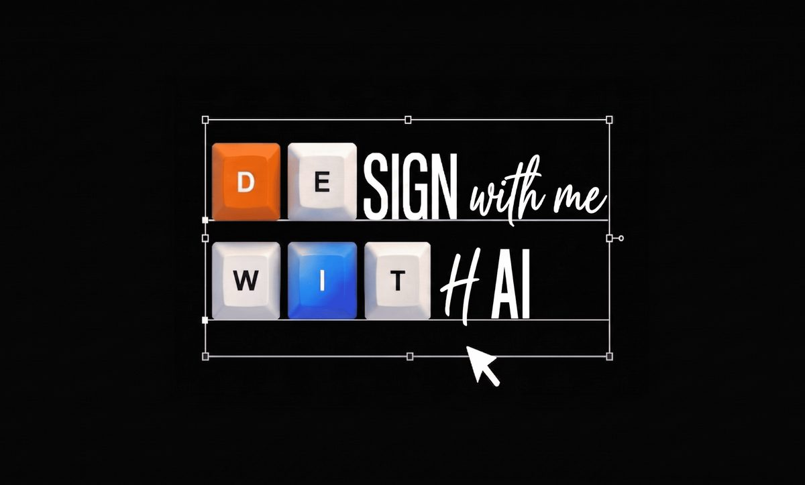

The premise
In early 2026, a designer at Anthropic declared that the traditional design process was dead. At the same time, I was a solo product designer at Wren AI, one person holding product design for a B2B AI platform, with 16 hours of my week swallowed by meetings and 3–4 projects running in parallel at any moment. This case study documents the 11-step AI workflow I built to make that actually possible.
My Role
Senior Product Designer at Wren AI. Also, by necessity: PM, researcher, prototyper, motion designer, illustrator, technical writer, dogfooding lead. The workflow is how one person covers ~6–8 FTE of traditional scope without losing craft.
Timeline
2026 → Present
The moment
Early 2026. An Anthropic designer publishes a post arguing that the traditional design process, discovery → research → wireframe → mockup → spec → handoff, is obsolete. Models can generate working interfaces faster than a designer can sketch one. The artifact (the Figma file) is no longer where the value lives.
I read it at a B2B AI startup where I was the only product designer. I didn't have the luxury of disagreeing. The reality was already pressing against me:
The reframe
The old question, "How do I get more time to design?", had no answer. The week was full. The new question became: "How do I make every hour of mine count for five?" That only worked if I stopped being the person making artifacts and started being the person directing a system that made them.
Claude Code became that system. Not as a tool I reach for occasionally, but as the central orchestration layer, the thing specs, prototypes, research summaries, marketing videos, Notion updates, and product docs all flow through. Below is the pipeline I ended up with.
Steps 00 → 11
Each step is a Claude Code skill, a plugin, or a scripted handoff. Six of them run on the design skill pack, user-research, design-critique, design-system-management, design-handoff, accessibility-review, and ux-writing, each a focused playbook rather than an open prompt.
The user-research skill ingests analytics events, session recordings, and support tickets and applies its synthesis framework, affinity mapping, impact/effort, jobs-to-be-done, to produce a behavior report with funnel drops, friction patterns, and anomalies. It then backtests them against the last round of design changes to show what actually moved.
user-research skillA one-line brief from the CEO becomes a full spec, problem statement, scope, edge cases, acceptance criteria, risk list, inside a Claude Code skill that knows the product surface, pulls signals from the user-research output above, and respects the existing design system. I edit the shape of the argument, not the prose.
user-research contextThe spec feeds into the user-research skill's journey-mapping mode, which produces an interactive HTML user journey, stages, actions, emotions, pain points, and opportunity moments. It's shareable as a link, survives review edits, and becomes the single source of truth every downstream step references.
user-research skill → HTMLdocs/journeys/{slug}.json/dogfoodingI feed the journey HTML plus the team's Storybook into a skill that respects design-system-management, correct tokens, variants, sizes, and states, not new invention. It outputs a working HTML/CSS/JS prototype with routing, states, interactions, and fake data.
design-system-management + StorybookI walk the prototype through the design-critique framework, first impression, usability, visual hierarchy, consistency, accessibility, and fix issues directly in Claude Code. I rework flows, tighten states, and fill empty / error / loading branches. Interaction design happens here now: in running code, not in Figma frames. The prototype becomes the design artifact of record. In parallel, I assess whether existing components cover the need, if they don't, I spin up the design-system agent to co-author new ones.
design-critiqueDESIGN-COMPONENTS.md + DESIGN-TOKENS.md on demand; pulls Figma context via MCP. One skill per run, no phases skipped.I pull the prototype into Figma and run design-system-management checks, correct token references, component variants, and states against the library. Figma Make then explores display states and alternative layouts at speed. Whatever wins comes back into Claude Code as a prompt to update the prototype. This is the only step where I still touch pixels directly, and it's the shortest.
design-system-managementEngineers receive Figma and a working prototype, plus a design-handoff spec sheet, tokens, variants and states, interaction timing, content limits, edge cases, and accessibility notes. They feed the prototype into their own Claude Code session to generate production code, treating my prototype as executable spec, not as a mockup to reinterpret. Handoff ambiguity drops to near zero because there's nothing to translate.
design-handoff + prototype → engineer's Claudevoice-profile-en.md + patterns.md for tone + standard phrasingsi18n/glossary.md enforces consistent term mapping across localesi18n/zh-tw.md / i18n/ja.md rewrites, not word-for-word translationsreview.md checks voice, clarity, consistency before handoffClaude Code wraps the same prototype with Remotion to produce a launch video, scripted scene timing, on-screen callouts, voiceover stubs. Marketing gets a ready-to-edit MP4 without me opening After Effects. The design artifact and the marketing artifact share the same source.
inputProps drive copy, data, colorsGemini, Weave, and Lovart (free tiers only) cover the brand layer, company mascot illustrations, campaign banners, short teaser videos.
The same journey map that drove the prototype generates a user-research-style dogfooding checklist (usability-test structure: warm-up → context → deep dive → reaction → wrap-up). An accessibility-review pass runs alongside it for WCAG 2.1 AA, contrast, keyboard, focus, touch targets. A Claude Code skill then consolidates findings, ranks by severity, proposes fixes, and drafts task assignments by owner. By Monday morning, a sprint-ready backlog I didn't hand-write.
user-research + accessibility-review + Claude Codedocs/journeys/{slug}.json, the same source that drove the prototype.Claude updates the Notion product roadmap against the backlog, recalculates each person's workload, and surfaces overbooked weeks before they blow up. The weekly roadmap review becomes a 10-minute review of Claude's draft, not a 2-hour spreadsheet session.
The journey map + the ux-writing skill + the Claude Chrome plugin produce the customer-facing docs, help-center pages, API reference stubs, release-note drafts, plus in-product microcopy (CTAs, empty states, error messages, confirmations). The same source that drove the prototype now drives the words users read when the feature ships, with a consistent voice and tone.
ux-writing + Claude Chrome pluginThese are my real numbers at Wren AI, proof that the pipeline above actually runs. They don't record the limits of my stamina. They record what's possible once the question stops being "how do I get more time to design" and becomes "how do I direct a system that designs."
Before, this took 6–8 different minds, PM, researcher, UI/UX, tech writer, even motion designer. Now those boundaries collapse inside me. With AI as leverage, one person can run the whole production line.
No "waiting on design" dead time here. 3–4 fronts advance simultaneously: Agent Mode's logic, Embedded Threads' experience, Design System maintenance, all in active motion, not queued and idle.
16 hours a week, this is the communication tax I pay as a "human." 40% of my time is locked to meetings, non-negotiable. Which means every remaining minute has to deliver several times its weight.
Meetings deducted, the 24 hours that remain each week are my real battlefield. Each project gets less than 6 hours. Sounds crazy? But when I'm no longer the craftsman drawing frames, when I'm the system owner directing Claude Code to execute the vision, a week's workload really does land inside 6 hours.